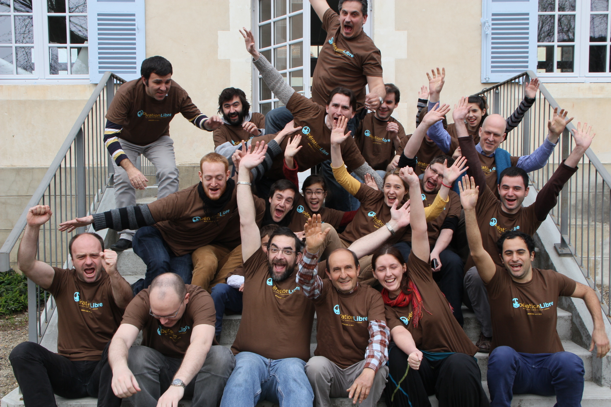

Quoi ?
Opération Libre c'est 48 heures d'animations participatives
Pour collecter et libérer les informations et outils d'une commune
Avec les habitants, des associations et contributeurs
Qui ?
L'Opération Libre est une initiative d'organisations travaillant autour des outils, licences, contenus et données libres. Elle a pour objectif de démontrer les opportunités de la libre diffusion des outils et informations des communes. L'édition 2015 à Chéméré est organisée à l'initiative et avec le soutien du Département de Loire-Atlantique.
Comment ?
Nous invitons les contributeurs de projets libres, les historiens, géographes, botanistes, développeurs, cartographes, photographes, designers, traducteurs, vidéastes, professionnels ou en herbe... et tous les curieux à nous rejoindre sur les animations :
- Répertorier la faune et flore locale sur Tela Botanica
- Créer des cartes du territoire basées sur Openstreetmap
- Prendre des photographies et les partager librement sur Commons
- Rédiger des articles historiques de la commune sur Wikipedia
- Imprimantes 3D, films, Drônes, vues aériennes, et bien plus encore !
Pour qui ?
Tout le monde !
Même si ces animations regroupent beaucoup de spécialistes, toute personne intéressée peut librement participer, des enfants aux anciens, en famille ou en solo.

Voici quelques actions accessibles à tous :
- Mettre à disposition vos archives, cartes postales, images de la commune
- Se former à maintenir la carte de la commune à jour
- Répertorier les plantes sur la commune
- Participer aux collectes d'informations et prises de photos
Quand et o√π ?
Chéméré, 9h30-18h00 les 26 et 27 septembre
Chéméré est une commune française de 2400 habitants située sur le département de Loire-Atlantique. La commune démarre un chantier d'ouverture de données et contenus pour mieux valoriser son territoire et assurer la transparence de ses informations.
Donnons-lui un coup de pouce !
Voir une carte plus grande
Programme
Le programme est sorti et consultable en cliquant sur l'image ci-dessous.
Vous pouvez découvrir et encore proposer vous-mêmes des activités ici !
Informations pratiques
Comment venir ?- Voiture : Arrivée Chéméré, 44680.
- Train : Arrivée Nantes (2 heures de Paris)
- Covoiturage et Hébergement : Propositions à venir sur le wiki
Navettes et Restauration: Des navettes seront mises à disposition entre Nantes et Chéméré pour les participants. Restauration sur place.
Contact
Inscrivez-vous à la liste de discussion dédiée à Opération Libre. Si vous avez des questions ou souhaitez rejoindre les partenaires, contactez-nous contact@operation-libre.org et @operationlibre.


Historique